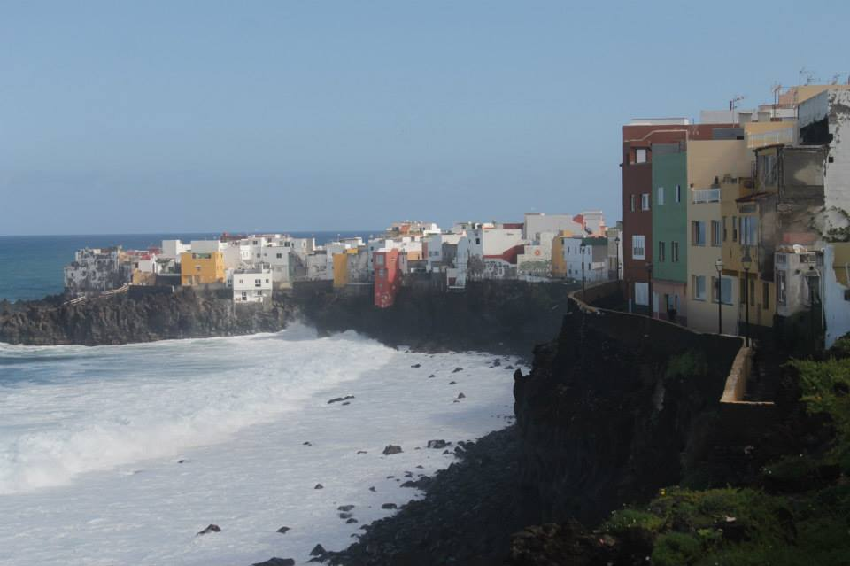

Tenerife
What to See
Tenerife is renowned for its diverse landscapes. Must-see spots include Mount Teide, Siam Park, Los Gigantes cliffs, Loro Parque, and the historic town of La Laguna.
A Brief History of the City
Tenerife has a rich history influenced by Guanche natives, Spanish conquest, and modern tourism. The island's capital, Santa Cruz de Tenerife, has evolved into a vibrant city blending tradition and contemporary culture.
Top 10 Attractions
- Mount Teide National Park
- Siam Park
- Los Gigantes Cliffs
- Loro Parque
- La Laguna
- Playa de las Teresitas
- Auditorio de Tenerife
- Garachico
- Masca Valley
- Candelaria Basilica
What to Bring
- Swimwear and beach essentials
- Sun protection (sunscreen, hat, sunglasses)
- Lightweight clothing
- Comfortable walking shoes
- Travel adapter (Type F socket)
- Camera or smartphone for photos
- Reusable water bottle
- Guidebook or map
- Personal medications
- Light jacket for cooler evenings
Currency
The currency in Tenerife is the Euro (€).
Best Time to Visit
Tenerife enjoys a subtropical climate, making it a year-round destination. However, spring (March to May) and autumn (September to November) offer ideal weather with fewer tourists.
Fun Facts
- Mount Teide is the highest peak in Spain and the third-largest volcano in the world from its base.
- Siam Park is considered one of the best water parks in the world.
- Tenerife hosts the famous Carnival of Santa Cruz, one of the largest carnivals globally.
- The island is home to diverse ecosystems, including lush forests and volcanic landscapes.
- Tenerife has its own unique species of flora and fauna, some of which are endemic to the island.